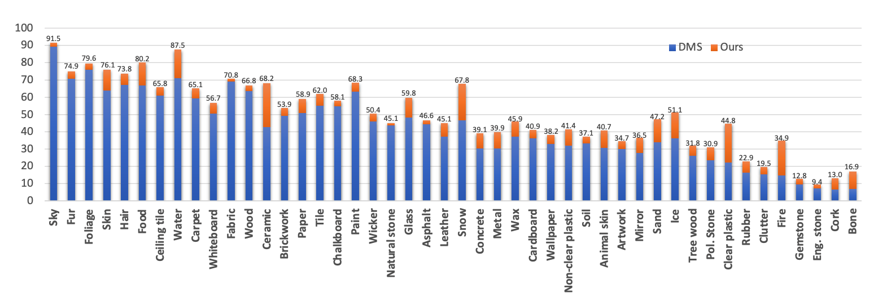

MATERobot: Material Recognition in Wearable Robotics for People with Visual Impairments
Preprint: arXiv
|
1Karlsruhe Institute of Technology
|
2Hunan University
|
|
|
*Joint First Authors
|
†Corresponding Author
|
|
|
Abstract
Wearable robotics can improve the lives of People with Visual Impairments (PVI) by providing additional sensory information. Blind people typically recognize objects through haptic perception. However, knowing materials before touching is under-explored in the field of assistive technology. To fill this gap, in this work, a wearable robotic system, MATERobot, is established for PVI to recognize materials before hand. Specially, the human-centric system can perform pixel-wise semantic segmentation of objects and materials. Considering both general object segmentation and material segmentation, an efficient MateViT architecture with Learnable Importance Sampling (LIS) and Multi-gate Mixture-of-Experts (MMoE) is proposed to wearable robots to achieve complementary gains from different target domains. Our methods achieve respective 40.2% and 51.1% of mIoU on COCOStuff and DMS datasets, surpassing previous method with +5.7% and +7.0% gains. Moreover, on the field test with participants, our wearable system obtains a score of 28 in NASA-Task Load Index, indicating low cognitive demands and ease of use. Our MATERobot demonstrates the feasibility of recognizing material properties through visual cues, and offers a promising step towards improving the functionality of wearable robots for PVI.
MATERobot
|
Fig. 1: MATERobot, (a) wearable robotics, can assist (b) material semantic segmentation (e.g., snow, ceramic) and general object semantic segmentation (e.g., sidewalk, cup)
|
MateViT Model

Fig. 2: Model architecture of MateViT with Learnable Importance Sampling (LIS) strategy to reduce the computational complexity, and a Multi-gate Mixture-of-Experts (MMoE) layer to perform dual-task segmentation (i.e., #1-Object and #2-Material segmentation). MHSA and FFN stand for Multi-Head Self-Attention and Feed-Forward Network. The upsampling layer is a standard Transformer decoder block. Decoder heads are the segmentation heads of Segmenter.
|
MateViT is our proposed model deployed on the MATERobot wearable system. For the sake of achieving high performance and efficiency, we propose MateViT, which has ViT with Learnable Importance Sampling (LIS) as the backbone, followed by an upsampling layer, a Multi-gate Mixture-of- Experts (MMoE) layer and two decoder heads. The overall architecture is shown in Fig. 2.
Learnable Importance Sampling
Since softmax is introduced in attention map calculation, the summation of each value in rows is equal to 1, illustrated in Fig. 2. However, the result does not always equal 1 when summing up all values in columns, indicating the importance of each token from an image. Based on this observation, we first calculate the summation in columns and then average the importance vectors among all heads. Top k values are selected and tokens are downsampled according to the indices of these k values after Add & Norm, which stand for a residual link and layer normalization.
Multi-gate Mixture-of-Experts
During the training, for every token in one image, only one same gate is activated to produce the selection vector. According to the indices of the top m values, m experts are selected and the token is only fed into the m experts. The output of the MMoE layer is a weighted sum of the top m values in the selection vector and their corresponding outcomes from the m experts. A task-relevant decoder head is then applied to transform all output tokens from MMoE into a prediction mask. During the inference, every token from one image is fed into all gates synchronously. The resulting weighted sums from selected experts are then decoded by the corresponding decoder heads shown in Fig. 2.
Results

Fig. 3: Per-class IoU (%) of all material categories. The blue bar shows the category IoU (%) of the baseline DMS, while the orange shows the performance gains (%) of our ViT-Small variant.
|

Fig. 4: Visualization of both object and material segmentation. From left to right in each group: RGB input, object segmentation, material segmentation.
|
Citation
|
If you find our work useful in your research, please cite:
@article{zheng2023materobot,
title={MATERobot: Material Recognition in Wearable Robotics for People with Visual Impairments},
author={Zheng, Junwei and Zhang, Jiaming and Yang, Kailun and Peng, Kunyu and Stiefelhagen, Rainer},
journal={arXiv preprint arXiv:2302.14595},
year={2023}
}
|